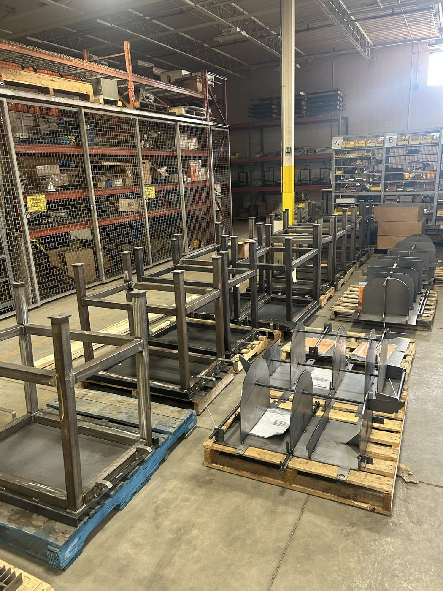

Robotic welding cell: upgrade and integration
- Problem
- The robotic welding cell was upgraded to improve weld quality, as part of the shop's modernization project.
- Constraints
- Custom-built FANUC robot
- Third-party Fronius welding package
- Brought into a working production shop
- Solution
- Fronius welder fitted to the robot
- Wire cutter and nozzle cleaner added
- Helped with the upgrade and integration
- Result
- After the upgrade, the FANUC robot runs full weld cycles on the fixture table using the Fronius power source. The wire cutter and nozzle cleaner trim the wire and clear spatter between welds, so each arc starts from the same condition.
